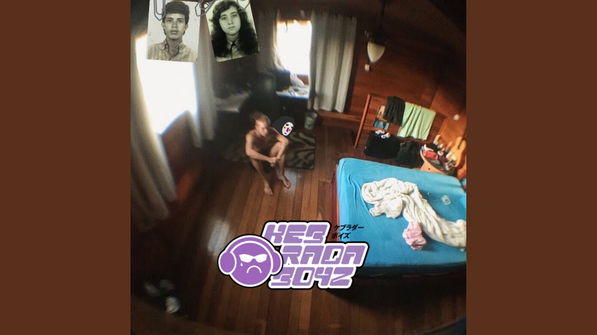
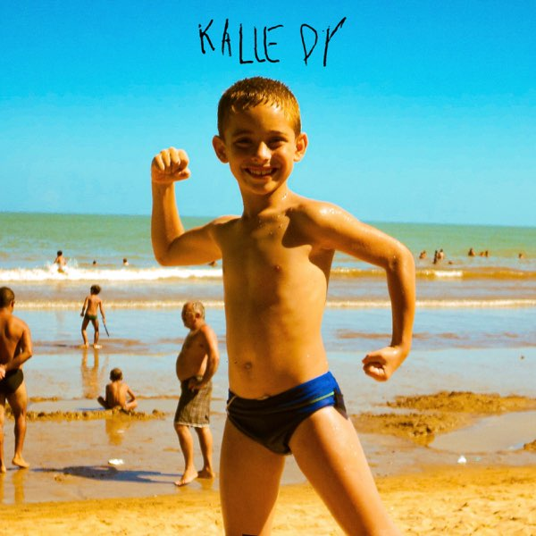

Link do Zap
Link do Zap é uma das vozes mais promissoras da música independente, conhecido por suas composições cativantes e sua forte presença nas plataformas digitais. Com seu estilo único e letras que falam diretamente com o público jovem, ele está conquistando cada vez mais fãs.
Gêneros: Trap, R&B, Pop
Ativo desde: 2021
Músicas Populares
-

Anti-heroi
Álbum: Contatos Perdidos
-

Presente de d
Álbum: Zona de Perigo
Discografia
- Kalledy
- De Boa com a Vida
- Eu não sou Santo